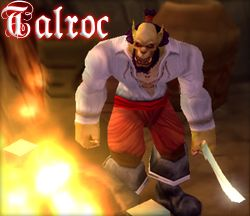

Talroc
Age : 37
Sexe : Homme
Race : Orc
Faction : Horde
Formation : Guerrier
Description : An 0 : Talroc, encore jeune, fait sa première apparition sur Azeroth sous la manière blanche du clan de la Shattered Hand mené par Kargath Bladefist. Epargner des rituels dautomutilation qui élevaient les orques au rang de guerriers en faisant offrande de leur main gauche, Talroc dut garder lusage de ses deux mains pour son statut de forgeron au sein du clan. Son rôle consista principalement durant la première guerre à fournir ses camarades en équipement et éventuellement réparer leurs armes et armures quand ils revenaient vivants à la suite dune bataille. Bien quayant reçu une formation de guerrier, il ne fut que rarement engagé dans les combats, ce qui ne le rendit pas aussi impitoyable et redoutable que ses camarades.
An 7 : Suite à la fin des deux guerres et à la mort de son chef Kargath Bladefist qui périt lors de la destruction de leur monde natale Draenor, Talroc ne pouvant se résigner à être commander par un « traître » tel que Orgrim Doomhammer rejoint une guilde de pirate afin de conserver sa liberté, fuyant ainsi le risque dêtre un jours attrapé seul et incarcérer dans un camp dinternement. Rapidement ses talents de réparateurs sont appréciés par ses camarades. Par la suite il développera quelques talents pour la cuisine, se spécialisant dans les brouets de rats fouisseurs qui infestaient son navire, offrant ainsi des repas bien bourratifs pour les guerriers des flots tout en se débarrassant de la vermine qui infestait leurs soutes. Talroc commence à développer de sérieuses capacités martiales durant sa vie de pirate par lexpérience des nombreux raides et pillages quil effectuera. Son naturel bavard et sa connaissance du commerce feront de lui le marchand principale de sa flotte, développant ainsi une série de relations parmi les gobelins et de guildes marchandes. Durant leurs haltes à certains ports tel que Booty Bay, Talroc prendra goût pour lanimation de taverne avec ses jeux, ses combats, ses concours et son commerce souterrain. Il y développera un certain talent pour les duels verbaux, les jeux de dés, les combat à mains nues et le pari de rats.
An 20 : Début de la troisième guerre. La bande dindomptables pirates à Talroc restent au large et évitent les raides par peur de linfluence des démons mais surtout dune contamination avec le fléau. Talroc à vent des activités navales humaines qui partent vers le Maëlstrom, il y voit alors une occasion en or pour combattre mais surtout agrandir sa flotte et remplir les soutes d'esclaves. Il partira alors à la recherche de nouvelles recrues pour son expédition mais la guerre ravage tout autant la population des pirates alors que les flottes militaires de chaque faction prennent de plus en plus dampleur
A la suite dune sale soirée qui finit en bagarre, Talroc quitte ses camarades et prit de mélancolie, reprend contact avec ses anciens camarades de la horde. Il apprend alors le désire de Thrall de voyager vers Kalimdor et sa recherche de vétérans pour la navigation navale, Talroc n'hésite pas un instant à l'entente de cette occasion et rejoint à nouveau les rangs de la Horde en tant que Capitaine. Il participe alors au combat avec ses frères pour piller les docks humains, prenant ainsi contrôle de quelques navires de guerres qui leurs serviront pour le voyage. Il prend alors une part active dans les combats pour leur nouvelle terre sous la bannière du clan Warsong et prend goût dans la collection de trophées doreilles delfes dans ses nombreuses escarmouches en Ashenvale. Talroc se joigna par la suite les forces douvriers volontaires pour la construction dOgrimmar, échangeant sa hache pour un marteau et ses camarades grunts pour des péons. Il participe activement à la construction de la taverne où il ira se reposer chaque soir, captivant une foule dauditeurs par des histoires dhéroïques batailles directement inspiré par ses expériences passés. Il y échangera aussi de nombreuses histoires avec les habitués de la taverne et se liera dune grande amitié et camaraderie avec le tavernier Morag.
Durant trois ans il ne quitta plus la région de Durotar et ne rejoignit quen de très rares occasions ses compagnons darmes du clan Warsong pour quelques escarmouches contre les campements delfes de la nuit. Il passa la plus part de son temps à voyager entre Tranchecolline et Ogrimmar offrant ses talents de forgerons aux nouvelles recrues qui sortaient de la vallée de lépreuve pour renforcer les rangs de la horde, le soir retournant au « trou » dOgrimmar pour bavarder autour de chopes de bières et de flasques de porto.
Malheureusement, un ennemi redoutable vint troubler la tranquillité des Orcs. En effet, sur les côtes de la fondation de Durotar, des troupes Humaines débarquaient et sinstallaient, pillant la faune et la flore et détruisant les avant-postes de la Horde. Talroc fut profondément offensé par les attaques humaines et décida de rejoindre la troupe de Rexxar, participa dès lors aux batailles contre les forces humaines : écrasant leur bastion dans lAnse de Tidefury et réduisant en cendre la citadelle de lAmiral Theramore. Un pacte fut mit en place avec lhumaine Jaina et la milice de Rexxar fut alors dissoute, Talroc retournant alors à ses précédentes activités.
An 24, Temps présent : Ayant goutté à nouveau aux plaisirs des combats Talroc ne réussi pas à réellement reprendre son passif rôle dartisan en Durotar. Il loua son service aux sergents de la horde, voyageant le monde en combattant tout les ennemis de la horde et saccageant par moments quelques campements de lalliance. Il resta néanmoins actif dans la capitale en tant que marchand darme et autre matériel, remplissant son goulet de bière le soir et participant aux diverses animations tel quela Joute des Mots où il pu à nouveau exercer sa talentueuse verve. Cest à la suite dune buverie au « trou » quil rencontra le vaillant Tauren Yazil qui le proposa dintégrer les rangs de la garde militaire, proposition qu'il accepta après avoir satisfait de la valeur au combat du Tauren lors de la défense d'Ogrimmar. Suite à cela, il apprit à connaitre et apprécier ses nouveaux camarades mais la garde fut rapidement dissoute à la suite de désaccords entre les officiers. Désormais Talroc se retrouve une fois de plus seul et va là où ses pieds le mènent...
Plus d'infos sur Talroc >>>Lire le récit de Talroc >>>